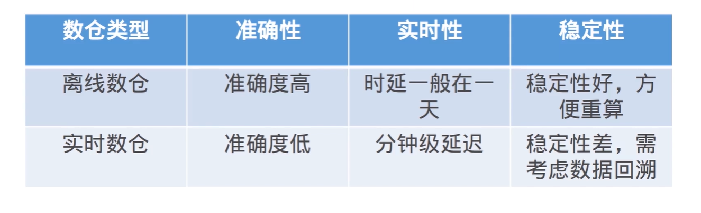

离线数仓
离线数据仓库主要基于Hive等技术来构建T+1的离线数据。
通过定时任务每天拉取增量数据导入到Hive表中。
创建各个业务相关的主题维度数据，对外提供T+1的数据查询接口。
离线数仓架构
数据源通过离线的方式导入到离线数仓中。
数据分层架构：ODS、DWD、DM等。
下游应用根据业务需求选择直接读取DM。
实时数仓
实时数仓基于数据采集工具，将原始数据写入到Kafka等数据通道。
数据最终写入到类似于Hbase这样支持快速读写的存储系统。
对外提供分钟界别、甚至秒级别的查询方案。
实时数仓架构
业务实时性要求的不断提高，实时处理从次要部分变为了主要部分。
Lambda架构：在离线大数据架构基础上加了一个加速层，使用流处理技术完成实时性较高的指标计算。
Kappa架构：以实时事件处理为核心，统一数据处理。

数仓架构发展
Lambda架构
批处理层（Batch Layer）:存储管理主数据集（不可变的数据集）和预先批处理计算好的视图。
速度处理层（Speed Layer）：实时处理新来的数据，降低批处理层的处理延时。
响应查询的服务层（Serving Layer）：返回预先计算数据视图和速度层处理构建好的数据视图的合并结果来响应查询。
Lambda架构的不足
同样的需求需要开发两套一样的代码。
同样的逻辑计算两次，整体资源占用会增多。
Kappa架构
与Lambda架构不同的是，Kappa架构去掉了批处理层这一体系结构。
统一了数据的处理方式，不再维护离线和实时两套代码逻辑。
选择一个具有重放功能的、能够保存历史数据并支持多消费的消息队列。
当某个或某些指标有重新处理的需求时，从上游消息队列的最开始重新消费。
当新作业赶上进度后，切换业务数据源，删除老作业。
Kappa架构的不足
需求修改或历史数据重新处理都要通过上游重放完成。
重新处理历史的吞吐能力会低于批处理。
并不适用于批处理和流处理代码逻辑不一致的场景。
Lambda VS Kappa
大公司实时数仓架构
实时数仓建设
整体架构设计通过分层设计为OLAP查询分担压力。
复杂的计算统一在实时计算层做，避免给OLAP查询带来过大的压力。
汇总计算通过OLAP数据查询引擎进行。
整个架构中实时计算一般是Spark+Flink配合。
消息队列Kafka一家独大，配合HBase、ES、MySQL进行数据落盘。
OLAP领域Presto、Druid、Clickhouse、Greenplum等